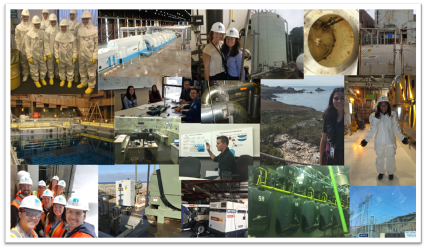
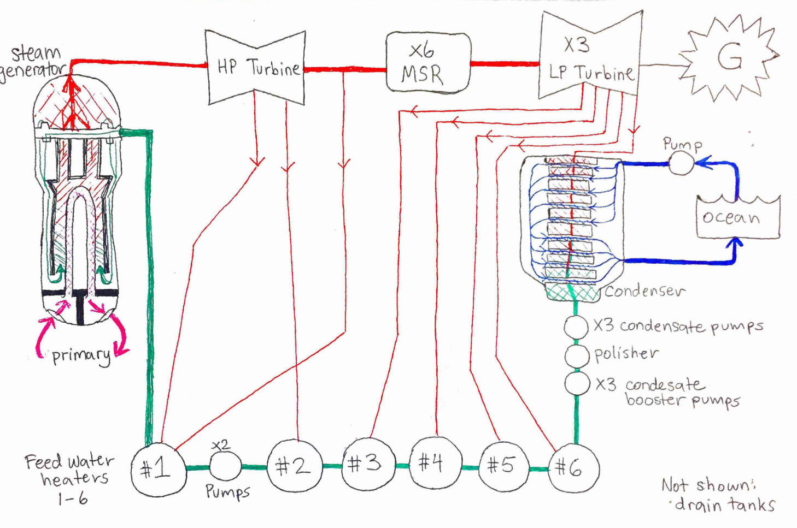
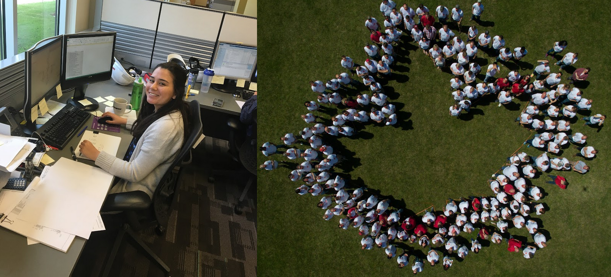

Below are some of my past engineering-related projects, publications, and consultant work from clients, national labs, and internships.
Consulting
Evaluation, Measurement & Verification (EM&V) Overview
EM&V Overview - An introduction to the principles of EM&V, which ensures that energy efficiency programs achieve their intended results. While my client-based EM&V work is proprietary, I regularly conduct impact assessments, data analysis, and reporting to validate energy savings for utilities.
Heat Pump Metering Study
Heat Pump Metering Study - A comprehensive study on heat pump efficiency in Massachusetts and Connecticut during winter months. I supported the analytics team by processing large datasets to assess seasonal performance and survey responses.National Residential Efficiency Measures Database (REMD)
National Residential Efficiency Measures Database (REMD) - As part of a team updating the REMD dataset, I helped scrape retail energy pricing data and develop regression models to predict pricing trends for modelers and researchers.
Research & Publications
Hydrogen Storage System Design Tool
Hydrogen Publication - My first-author publication on a computational tool for designing adsorbent hydrogen storage systems in fuel cell vehicles. The tool integrates material properties, thermodynamic equations, and system-level modeling to optimize hydrogen storage performance.Pressure Plug Patent Request
Pressure Plug Patent Request - A patent submission for a low-profile, high-pressure hydrogen tank plug designed for submarine applications. I developed a CAD model for manufacturing and assisted in creating a test plan to validate performance under high pressure.
National Lab Research

A few images from my time at the national lab. I worked on flow cell batteries in glove boxes and explored novel 3D printing techniques. The syringe extruder shown was used for preliminary testing of wet carbon fiber-reinforced cement, with frosting and toothpaste serving as test materials for easy cleanup. (It also makes for a fun story.)
Internships
Internship at Nuclear Power Plant

A collage from my time interning at California’s only nuclear power plant, where I gained hands-on experience in power generation and system operations.Nuclear Power Plant Systems Drawing

A schematic I developed during my internship to illustrate the power generation cycle. I found it quite useful for understanding thermodynamic principles in action.Internship for Mechanical Design

This Canada-based internship focused on mechanical design for railway maintenance equipment. One of the more amusing moments was a company-wide gathering where we formed a maple leaf, wore red noses, and received bottles of maple syrup as gifts.
Engineering & Technical Reports
Below are some of my past projects and reports from my time at Iowa State University (B.S. Mechanical Engineering) and Georgia Institute of Technology (partial M.S. Analytics), categorized by subject area.
- Fluids Lab Report - Experimental analysis of fluid dynamics principles in a controlled environment.
- Heat Transfer Lab Report - Investigating heat transfer efficiency in different materials and conditions.
- Pumped Hydro Storage Thesis Report - A research thesis on energy storage solutions using pumped hydro.
- Electric Vehicles Report - Analysis of electric vehicle technology, performance, and efficiency.
- Power Generation Report - Technical insights into modern power generation systems.
- Senior Capstone Poster - Final-year project poster summarizing key findings and innovations.
- SolarShack Project - A conceptual design for a sustainable, solar-powered housing solution.
{kind=link}
Analytics & Data Science
- Business Analytics Report - An in-depth business intelligence analysis using statistical and machine learning methods.
- Regression Part 1 - Linear regression modeling and interpretation.
- Regression Part 2 2 - Regression assumptions and diagnostics.
- Regression Part 3 - Logistical regression and interpretation.
- Regression Part 4 - Advanced regression and feature selection.
- Analytics Notes - A compilation of key analytics concepts and methodologies.
- Python Evaluation - A web-based Python assignment showcasing coding principles.
Visual & Interactive Work
- ISU Infographics - A collection of visual data storytelling projects.
- Python Animation 1 - A dynamic animation generated using Python.
- Python Animation 2 - Another Python-based visualization.